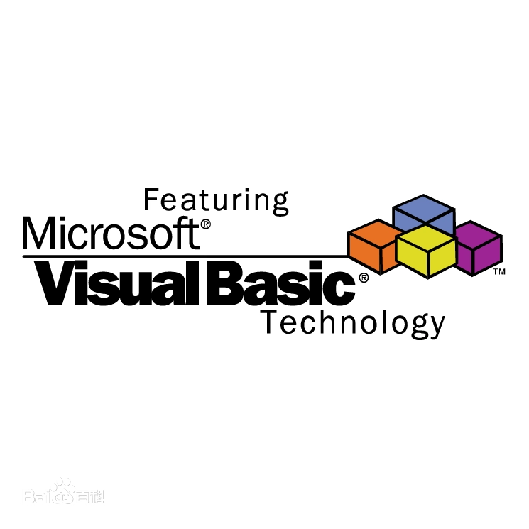
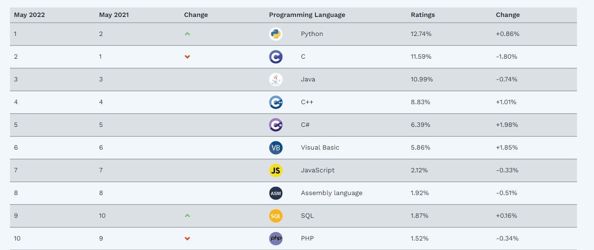

*本节讲述VB系列语言的历史，可跳过
BASIC
广义上来说，BASIC是目前所有能称为VB语言的先祖。
你问为什么全部都是大写的？
很显然，BASIC也是一个缩写，它的全称是Beginners' All-purpose Symbolic Instruction Code，初学者通用符号指令代码。
怎么样，是不是一看就非常的“basic”？
事实也确实如此，自BASIC在1964年被发明，到现在的VB系列语言，无论是哪个版本，VB总是学起来最简单的几门语言。它的特点是使用英文单词直译，这使得写代码时更加方便
当然，VB能发展到现在，其能实现的内容已经不再是"Beginner"了，而是一门非常高级的语言。
BASIC的出现，大大降低了编程的门槛，使得当时的软件如雨后春笋般出现。甚至在当时日本和美国等国家，电脑中大部分软件和游戏都是使用BASIC编写的。
你问为什么全部都是大写的？
很显然，BASIC也是一个缩写，它的全称是Beginners' All-purpose Symbolic Instruction Code，初学者通用符号指令代码。
怎么样，是不是一看就非常的“basic”？
事实也确实如此，自BASIC在1964年被发明，到现在的VB系列语言，无论是哪个版本，VB总是学起来最简单的几门语言。它的特点是使用英文单词直译，这使得写代码时更加方便
当然，VB能发展到现在，其能实现的内容已经不再是"Beginner"了，而是一门非常高级的语言。
BASIC的出现，大大降低了编程的门槛，使得当时的软件如雨后春笋般出现。甚至在当时日本和美国等国家，电脑中大部分软件和游戏都是使用BASIC编写的。
Visual BASIC
1975年，微软成立，比尔盖茨将BASIC编译器移植到intel平台，为以后Windows环境下的VB奠定基础。
1991年，初代VB发布，之所以叫Visual，是因为这个版本加入了图形化界面(GUI)设计器，只需要拖动鼠标就能轻松绘制出一个好看的界面，这对于其他语言来说是降维打击。
1998年，VB6发布。这是传统VB的巅峰时期。桌面软件开发有VB6，网页脚本有VBS，甚至office都在使用VBA。
然而，时代更迭非常快，VB6在2008年正式停止维护，最后一个支持VBS脚本的浏览器IE在2022年正式退役，VBA逐渐淡出大众视野，除了Excel函数之外再也看不见VBA的踪影。而这也是目前部分人对VB偏见与误解的由来。
这不禁使人感叹。然而，以VB的生命力，是永远不可能消亡的。
1991年，初代VB发布，之所以叫Visual，是因为这个版本加入了图形化界面(GUI)设计器，只需要拖动鼠标就能轻松绘制出一个好看的界面，这对于其他语言来说是降维打击。
1998年，VB6发布。这是传统VB的巅峰时期。桌面软件开发有VB6，网页脚本有VBS，甚至office都在使用VBA。
然而，时代更迭非常快，VB6在2008年正式停止维护，最后一个支持VBS脚本的浏览器IE在2022年正式退役，VBA逐渐淡出大众视野，除了Excel函数之外再也看不见VBA的踪影。而这也是目前部分人对VB偏见与误解的由来。
这不禁使人感叹。然而，以VB的生命力，是永远不可能消亡的。

VB.NET
VB.NET可不是一个网站，而是独立于VB的另一门语言。
对于“.NET Framework”，大家应该不会感到陌生，而VB.NET正是利用了.NET Framework的VB。
2002年，初代.NET发布，其中包含了初代VB.NET，也被叫做VB7。虽然也叫VB，但似乎只能说是精神延续，因为改动的内容太多了，也从VB6的编译型语言转变成了现在的解释型语言。被继承下来的只有那利于阅读和方便新手学习的语言风格，以及大部分关键字罢了。
2010年，.NET4发布，这也是目前应用最广的.NET版本，主要是因为微软从2010到2020之间10年没有进行大更新，并且一直到4.8版本仍然在不断进行维护和优化。VB.NET4也被称为VB10，已经非常完善。
截至本文发布，.NET7，VB13测试版已经诞生，但.NET5及以后的版本似乎微软也没有下功夫推广。
除此之外，.NET并不是只有一门语言，它包含了C#,VB.NET,F#这三门语言
这三门语言在能力方面并没有区别，只是语法以及外观上会有差别。
在几年前，打开某些软件会提示安装.NET Framework，这正是因为它们使用了这三门语言中的某一个，当然，现在已经不用担心兼容性了，因为作为微软自己的编程语言，现在的Windows系统已经自带.NET4，所以只要是Windows环境，一切都好办。
.NET的出现，无疑为VB带来了新生。
对于“.NET Framework”，大家应该不会感到陌生，而VB.NET正是利用了.NET Framework的VB。
2002年，初代.NET发布，其中包含了初代VB.NET，也被叫做VB7。虽然也叫VB，但似乎只能说是精神延续，因为改动的内容太多了，也从VB6的编译型语言转变成了现在的解释型语言。被继承下来的只有那利于阅读和方便新手学习的语言风格，以及大部分关键字罢了。
2010年，.NET4发布，这也是目前应用最广的.NET版本，主要是因为微软从2010到2020之间10年没有进行大更新，并且一直到4.8版本仍然在不断进行维护和优化。VB.NET4也被称为VB10，已经非常完善。
截至本文发布，.NET7，VB13测试版已经诞生，但.NET5及以后的版本似乎微软也没有下功夫推广。
除此之外，.NET并不是只有一门语言，它包含了C#,VB.NET,F#这三门语言
这三门语言在能力方面并没有区别，只是语法以及外观上会有差别。
在几年前，打开某些软件会提示安装.NET Framework，这正是因为它们使用了这三门语言中的某一个，当然，现在已经不用担心兼容性了，因为作为微软自己的编程语言，现在的Windows系统已经自带.NET4，所以只要是Windows环境，一切都好办。
.NET的出现，无疑为VB带来了新生。
百家争鸣
VB.NET的成功，使VB的社区环境重新焕发活力。许多非微软官方的IDE开始涌现，比如B4X就可以使用VB来开发安卓、ios、Linux平台的软件。
在这里挖个坑，以后有机会一定要在这个网站更新B4A开发安卓app的教程。
与此同时，VB.NET在Tiobe上的排名也迅速升高，上升到第6名，.NET家族的老大哥C#位列第5，并且这两门语言都有向上超越C++和Java的趋势。
当然，虽说VB6已经衰落，但其排名仍然在15名左右徘徊，并且从未掉出前20——要知道，目前全世界被承认的编程语言有上千门之多.
另外，B4X的威力也不容小觑，作为一门完全依靠社区维护的语言，其排名居然高达54，并且仍然在不断上升。
在这里挖个坑，以后有机会一定要在这个网站更新B4A开发安卓app的教程。
与此同时，VB.NET在Tiobe上的排名也迅速升高，上升到第6名，.NET家族的老大哥C#位列第5，并且这两门语言都有向上超越C++和Java的趋势。
当然，虽说VB6已经衰落，但其排名仍然在15名左右徘徊，并且从未掉出前20——要知道，目前全世界被承认的编程语言有上千门之多.
另外，B4X的威力也不容小觑，作为一门完全依靠社区维护的语言，其排名居然高达54，并且仍然在不断上升。
